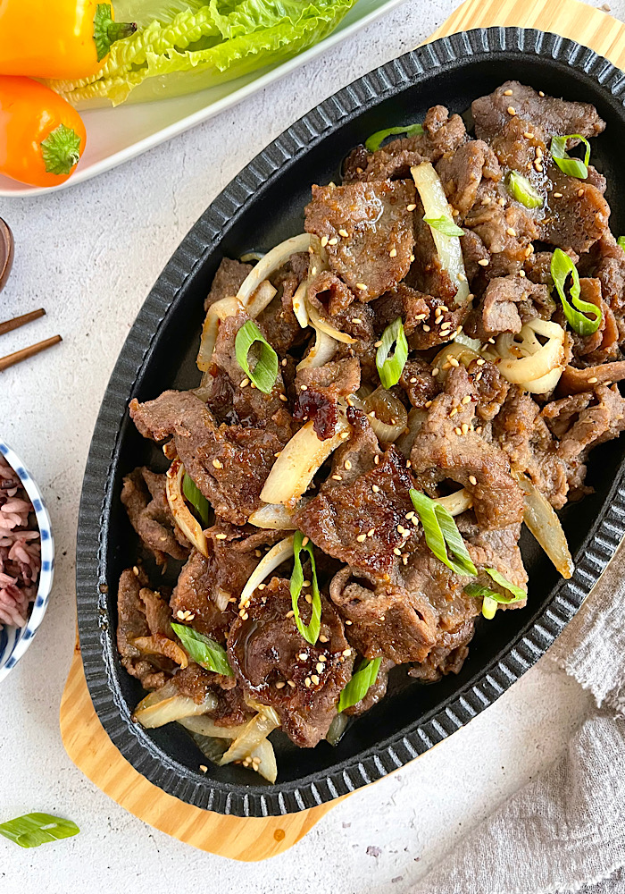

Bulgogi

Description
A recipe to make a delicious, yet simple bulgogi dish.
This recipe was written in full by Maangchi.
Ingredients
- 500g beef sirloin
- 1/2 cup of crushed Korean pear
- 4 cloves of minced garlic
- 1 teaspoon minced ginger
- 2 tbs soy sauce
- 2 tbs brown sugar(or 1tbs of brown sugar and 1 tb rice syrup
- 1 tbs toasted sesame oil
- several thin slices of carrot
Steps
- Mix all the marinade ingredients in a bowl.
- Add the sliced beef and mix well.
- It is best to let the meat marinate for at least 30 minutes in the fridge, but you can also cook it immediately.
- Grill over medium-high heat
- Serve with Korean side dishes, like kimchi, lettuce, ssamjang, and garlic.